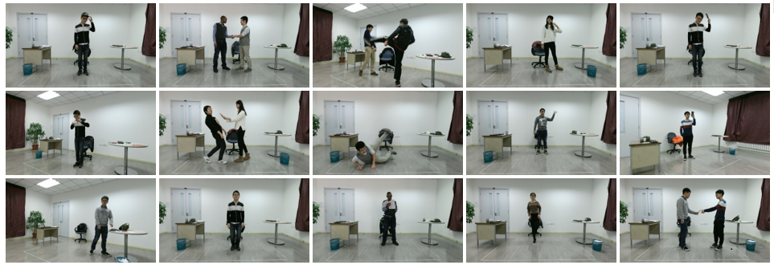
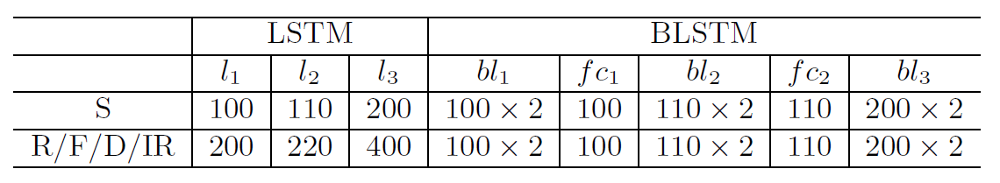
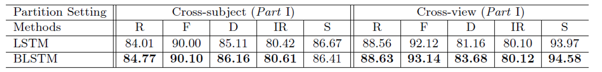
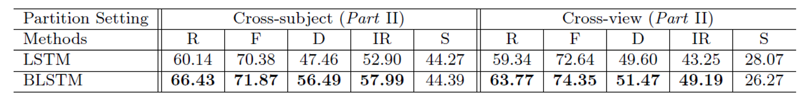

PKU-MMD: A Large Scale Benchmark for Continuous Multi-Modal Human Action Understanding

Fig.1 PKU Multi-Modality Dataset is a large-scale multi-modalities action detection dataset. This dataset contains 2 phases, phases #1 contains 51 action categories, performed by 66 distinct subjects in 3 camera views.
Abstract
PKU-MMD is a new large scale benchmark for continuous multi-modality 3D human action understanding and covers a wide range of complex human activities with well annotated information. PKU-MMD contains 2 phases, for action detection tasks with increasing difficulty. Phase 1 is large-margin action detection task. Phase 2 is small-margin action detection task. Our dataset also provides multi-modality data sources, including RGB, depth, Infrared Radiation and Skeleton. We believe this large-scale dataset will benefit future researches on action detection for the community.
Resources
Phase #1: GoogleDrive
Phase #2: GoogleDrive BaiduYun
P.S. We highly recommend downloading the resources by GoogleDrive or BaiduYun client for efficiency.
Citation
@article{liu2017pku, title={PKU-MMD: A Large Scale Benchmark for Continuous Multi-Modal Human Action Understanding}, author={Chunhui, Liu and Yueyu, Hu and Yanghao, Li and Sijie, Song and Jiaying, Liu}, journal={arXiv preprint arXiv:1703.07475}, year={2017} }
Dataset Description
Phase #1 contains 1076 long video sequences in 51 action categories, performed by 66 subjects in three camera views. It contains almost 20,000 action instances and 5.4 million frames in total. Each video lasts about 3$\sim$4 minutes (recording ratio set to 30 FPS) and contains approximately 20 action instances. The total scale of our dataset is 5,312,580 frames of 3,000 minutes with 21,545 temporally localized actions.
We choose 51 action classes in total, which are divided into two parts: 41 daily actions (drinking, waving hand, putting on the glassed, etc.) and 10 interaction actions (hugging, shaking hands, etc.). 66 distinct subjects are invited for our data collection. Each subjects takes part in 4 daily action videos and 2 interactive action videos.our videos only contain one part of the actions, either daily actions or interaction actions. We design 54 sequences and divide subjects into 9 groups, and each groups randomly choose 6 sequences to perform.
Phase #2 contains 1009 short video sequences in 41 action categories, performed by 13 subjects in three camera views. Each video lasts about 1$\sim$2 minutes (recording ratio set to 30 FPS) and contains approximately 7 action instances.
We provide 5 categories of resources: depth maps, RGB images, skeleton joints, infrared sequences, and RGB videos.
Data Format
Video Files:
RGB files are compressed to avi videos in 30 FPS using ffmpeg. File
name format is $XXXX-V.avi$ for No. $XXXX$ video file in view $V$. For
example $0001-L.avi$ is the first video in left view.
Skeleton Files:
For each video, there exists a skeleton file $XXXX-V.skeleton$ which
contains several lines for frame-level skeleton data. Each line contains
$3\times 25\times 2$ float numbers for 3-dimensional locations of 25
major body joints of 2 subjects.
Label Files:
For each video, there exists a label file named $XXXX-V.label$
illustrating the ground truth labels. Several lines will be given, each
line contains 4 integers for $Label, start, end, confidence$
respectively. Note that $confidence$ is either $1$ or $2$ for slight and
strong recommendation respectively.
Depth Files:
A folder is provided for each video which contains several images
corresponding to each frame. Each image is in $two-dimensional$
$512\times 424$ png format.
RGB Files:
A folder is provided for each video which contains several images
corresponding to each frame. Each image is in $three-dimensional$
$1920\times 1080$ jpeg format.
Infrared Files:
A folder is provided for each video which contains several images
corresponding to each frame. Each image is in $one-dimensional$
$512\times 424$ png format.
Metrics
For the detection task, there is a basic criterion to evaluate the overlapping ratio between the predicted action interval $I$ and the ground truth interval $I^{*}$ with a threshold $\theta$. The detection interval is correct when \begin{equation} \frac{|I \cap I^{*}|}{|I \cup I^{*}|} > \theta. \end{equation} where $I \cap I^{*}$ denotes the intersection of the predicted and ground truth intervals and $I \cup I^{*}$ denotes their union. So, with $\theta$, the precision $p(\theta)$ and recall $r(\theta)$ can be calculated.
P.S. For more information on Interpolated Average Precision, please read: Evaluation of ranked retrieval results.
More Samples
Fig.2 From top to bottom, these four rows show RGB, depth, skeleton and IR modalities, respectively.
Fig.3 We collect 51 actions performed by 66 subjects, including actions for single and pairs.
FAQs
We did not record the coordinates of skeletons in the RGB in our dataset. But they can be calculated with the camera paramter matrix $M$.
M = [
[1.03e3, 0, 9.80e2],
[0, 1.03e3, 5.50e2],
[0, 0, 1 ]
]
For a skeleton coordinate $p = [x,y,z]^T$ in the provided data, we can get the corresponding coordinate $p' = [x',y']^T$ in the RGB image by, $[a,b,c]^T = Mp$
$x' = a/c$
$y' = b/c$
Baselines
*Note that for RGB/optical flow/depth/IR data, we extract deep features from convolutional layers and then feed them to the following recurrent layers. More specifically, each frame is finally represented by a vector of dimension 1024 from the layer global pool of BN-Inception network. For skeletons, we directly feed the data to the recurrent layers.

Fig.5 The structure of LSTM and BLSTM modesls for action recognition.
Table 1. The number of neurons in LSTM and BLSTM networks.
Table 2. Action recognition baseline results on Part I and Part II, respectively. (Acc. %)
 